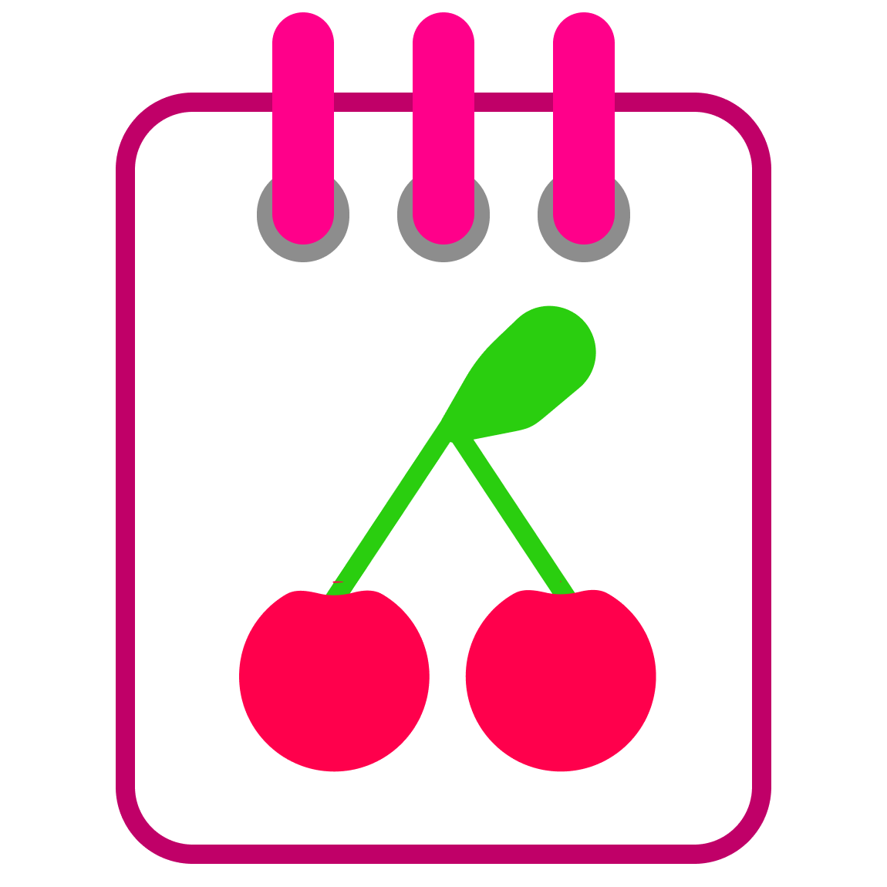
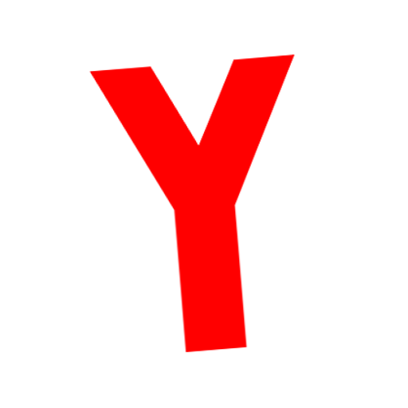

Adderly.Top
Adderly.Top
Добро пожаловать на Adderly.Top!
Это сайт Марка Аддерли - техноблогера на YouTube.
Здесь вы можете скачать мои программы для Windows, оригинальные ISO, MakuTweaker и многое другое!
На сайте есть реклама. Если вы выключите адблокер, вы поможете мне продолжать свою деятельность!
Последние статьи и новости на сайте:
Загрузка новостей...
Скачать программы от Марка Аддерли:
MakuTweaker
Самый дружелюбный и полезный твикер для Windows.
MakuTyper
Современный и полезный блокнот, идеально дополняющий дизайн Windows 11.
MakuFlash
Красивое и дружелюбное переосмысление программы для записи Windows на флешку.

YouTube Downloader
Красивая и удобная реализация yt-dlp с предпросмотром загружаемого видео.

MakuYan
Отдельная программа для блокировки Яндекс Браузера и Мессенджера Max.